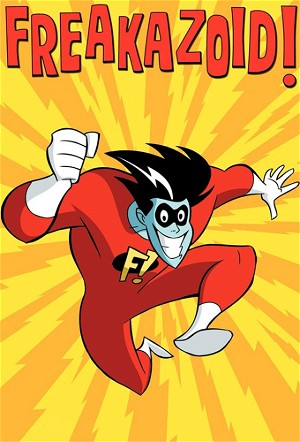

Freakazoid! (1995)
ActionAdventureAnimationChildrenComedyFamilyFantasyScience Fiction
| Year | 1995 |
|---|---|
| Rating | TV-G |
| Status | Completed |
| Seasons | 3 |
| Episodes | 52 |
| Genre | Action, Adventure, Animation, Children, Comedy, Family, Fantasy, Science Fiction |
Dexter Douglas is a mild-mannered teenager who, one snowy afternoon, while logged onto the Internet, is thrust into a horrible crash on the information superhighway and transformed into an electrifying superhero. He's average, predictable, the middle of the bell curve and the center of the silent majority -- basically he's completely dull and boring! There's simply nothing extraordinary about Dexter Douglas. He's just a kind-hearted guy who blends into the crowd easily -- except when he's "Freakazoid"! With his new power and the support of fan boy and his other friends he will stop the evil lobe and the other evil doers and all in time to lock lips with the sexy Steff. Freakazoid! was executive produced by Steven Spielberg.
Episodes
Specials
| # | Title | Air Date | Synopsis |
|---|---|---|---|
| 1 | Freakazoid: The Original Freak | 2008-07-29 | How what started as a straightforward animated action hero evolved into a chaotically comic cartoon phenom From the Freakazoid!: Volume 1 DVD |
| 2 | Freakazoid-less Freakazoid Promos | 2008-07-29 | Cruise ship parodies that promoted the series launch From the Freakazoid! Volume 1 DVD |
| 3 | Liebeslied für Normadeus | 2009-04-21 | Series creators and crew recall the show's second year and the making of the epic, cameo-crammed final episode From the Freakazoid! Volume 2 DVD |
| 4 | A Full Season's Worth of Commentaries (in Five Minutes or Less) | 2009-04-21 | Favorite moments remembered From the Freakazoid! Volume 2 DVD |
| 5 | Alternate Episode: The Cloud / Candle Jack | 1995-10-14 | In addition to the 24 main episodes of Freakazoid!, several variant episodes aired, re-configuring the cartoon segments into new combinations and sometimes adding new content, post-credit tags or gag credits. This varian |
| 6 | Teen Titans Go! s06e33: Huggbees | 2020-11-14 | The Brain teams up with The Lobe, so the Titans enlist the help of Freakazoid to stop them. |
Season 1
Washington, D.C. has a new defender: Freakazoid. The comedy (and sanity) never stops when he's around and he's only one of the weird heroes of the series! It's better than a nice tub of good things!
| # | Title | Air Date | Synopsis |
|---|---|---|---|
| 1 | Five Day Forecast | 1995-09-09 | Freakazoid reports on the weather. |
| 2 | Dance of Doom | 1995-09-09 | When Cave Guy takes high school students hostage at a Daylight Savings Time dance, only one hero can stop him. But that hero is on another network, so Freakazoid must do the job instead. |
| 3 | Hand Man | 1995-09-09 | After Freakazoid and his new sidekick, Handman, defeat the Lobe, Handman heeds the call of matrimony. |
| 4 | Candle Jack | 1995-09-16 | At Camp Wennamigonnagohome, counsellor Steff and her horror-loving charges are menaced by a spooky bogeyman-guy with the power to capture anyone who says his name out loud. |
| 5 | Toby Danger in Doomsday Bet | 1995-09-16 | Toby Danger and his cohorts face the ultimate peril when the evil Dr. Sin steals the world's largest semiconductor. |
| 6 | The Lobe | 1995-09-16 | The Lobe and a hypnotized Steff prepare to lobotomize Freakazoid. |
| 7 | Mo-Ron | 1995-09-23 | A fat, dumb alien comes to Earth with an important message, that is if he can remember it! |
| 8 | Sewer Rescue | 1995-09-23 | Lord Bravery gets his big break in crime fighting when he has to rescue a man who fell into the sewers but can't stand the stench! |
| 9 | The Big Question | 1995-09-23 | Another spaceship full of aliens comes to Earth with an important question. |
| 10 | The Legends Who Lunch | 1995-09-23 | A bunch of old superheroes talk about their heydays in crime fighting. |
| 11 | And Fanboy is His Name | 1995-09-30 | Fan boy attempts to becomes Freakazoid's new sidekick. |
| 12 | Lawn Gnomes, Chapter IV: Fun in the Sun | 1995-09-30 | Despised by mankind, the Gnomes try to change their ways. |
| 13 | Frenching with Freakazoid | 1995-09-30 | Freakazoid teaches some useful French. |
| 14 | Foamy the Freakadog | 1995-10-07 | Freakazoid rescues a rabid dog and names it Foamy the Freakadog, but he is not adapting well. |
| 15 | Office Visit | 1995-10-07 | Lord Bravery has to get a bakery shop named "Lord Bravery's Bake Shoppe" to change its name, IF he can get other shops to change their names! |
| 16 | Ode to Leonard Nimoy | 1995-10-07 | Fanboy gives a brilliant ode to his Star Trek hero Leonard Nimoy and also wants his autograph! |
| 17 | Emergency Broadcast System | 1995-10-07 | Freakazoid is testing the Emergency Broadcast System, but can he hold his breath for it? |
| 18 | Cönversational Nörwegian | 1995-10-07 | Norwegian is taught on a boat. |
| 19 | The Chip (1) | 1995-11-04 | The story of how Dexter Douglas got his powers and became Freakazoid. |
| 20 | The Chip (2) | 1995-11-11 | Jack Valenti acts as host for the action-packed story of Freakazoid's origins, which includes a flawed microchip, and a villian who wears an eye-patch named Guitierrez, a Scottish computer expert, an animal psychologist, |
| 21 | Freakazoid is History! | 1995-11-11 | A job of rescuing the President turns into an unexpected TV parody when a vortex sucks Freakazoid and some honey-roasted nuts back to Pearl Harbor, 1941. Can he turn back the Japanese torpedo planes and change the course |
| 22 | Hot Rods from Heck! | 1995-11-18 | Hot Rods from Heck: Longhorn hatches a plan to use robotic hot rods to steal a dangerous toxic nuclear warhead. |
| 23 | A Time for Evil | 1995-11-18 | The Huntsman visits the police station in search of some bad crime to fight. |
| 24 | Relax-O-Vision | 1995-11-25 | By the order of H.A. Futterman, the disturbingly violent bits in the latest Freakazoid adventure are replaced by calming, mirthful images. But this doesn't stop the Lobe from kidnapping Steff, who responds by screaming s |
| 25 | Fatman and Boy Blubber | 1995-11-25 | Two bulky but plucky superheroes save portly young Louis from a couple of bullying dirtbags. But what is their price? |
| 26 | Limbo Lock-up | 1995-11-25 | Freakazoid's virtuoso display of idiocy is interrupted by cyberspace's "idiotic police", and he is left to choose between imprisonment and a fate worse than death. |
| 27 | Terror Palace | 1995-11-25 | The Horn of Urgency is sounded, and the Huntsman runs there in a jiffy. |
| 28 | In Arms Way | 1995-12-16 | Freakazoid's Christmas shopping is interrupted by a run-in with crime boss "Arms" Akimbo (whose arms are "permanently locked in a jaunty pose"), who is extorting money from local storekeepers by selling "oops" insurance. |
| 29 | The Cloud | 1995-12-16 | In the remote Teutonic mountains of Schnitzel, a spooky cloud seems to be transforming people into clown zombies. Freakazoid arrives to solve the mystery. |
| 30 | Next Time, Phone Ahead! | 1996-02-03 | Next Time, Phone Ahead: An alien mother ship winds up in Dexter's backyard. |
| 31 | Nerdator | 1996-02-03 | An evil alien is kidnapping all the nerds and geeks in the world, hoping to utilize their geekiness for himself, become a super-genius, and conquer the world. Freakazoid has to convince the "Nerdator" that being a nerd i |
| 32 | House of Freakazoid | 1996-02-10 | A lycanthrope named Lonnie Tallbutt knocks on the Douglas' door and implores Dexter to cure him of the werewolf's curse. |
| 33 | Sewer or Later | 1996-02-10 | Cobra Queen and her jewel-thieving serpents are holed up in the poorly-lit sewer. It's Freakazoid's duty to go down there after her-- but he hates sewers! |
| 34 | The Wrath of Guitierrez | 1996-02-17 | Armongo Guitierrez is now able to zap himself into the internet while using the Pinnacle Chip and he plans to get revenge on Freakazoid, though will he be able to accomplish the task, despite the fact that Freakazoid def |
Season 2
| # | Title | Air Date | Synopsis |
|---|---|---|---|
| 1 | Dexter's Date | 1996-09-07 | Dexter's date with Steph is interrupted by the Lobe, who has a plan to bring down the TV broadcasting industry. However, Dexter finds it difficult because he needs to turn into the Freakazoid in order to stop the Lobe, |
| 2 | The Freakazoid | 1996-09-14 | It's Freakazoid's birthday, so according to the Superhero Codebook, he's got to do favors for whoever asks him. Then the Lobe shows up and makes Freakazoid promise to leave him alone. Since all the other local superheroe |
| 3 | Mission: Freakazoid | 1996-09-28 | When Freakazoid's family gets imprisoned in the brutal state of Vuka Nova, Freakazoid must travel there with his friends, stop the ruthless dictator and free his loved ones; though that sounds much easier than it turns o |
| 4 | Virtual Freak | 1996-11-02 | While playing a state of the art game at the mall, Freakazoid and Cosgrove get sucked into a bizarre virtual world; but things soon take a turn for the worse when the Lobe starts causing havoc in the mall. Freakazoid an |
| 5 | Hero Boy | 1996-11-09 | Guitierrez is back, though this time he has a plan to capture Freakazoid and create an evil clone, in order to make Freakazoid look bad and to ruin his reputation, though he has a couple of other tricks up his sleeve as |
| 6 | A Matter of Love | 1996-11-16 | Cosgroves gets a girlfriend, which causes Freakazoid to become upset because Cosgrove no longer has time to hang out with him anymore. However, when Freakazoid decides to look into the issue, he discovers that she's an |
| 7 | Statuesque | 1996-11-29 | Jeepers (the creepy guy from "Dance of Doom", with the watch that turned beavers into gold) is back, and this time he's got a watch that turns people into stone, and the help of an evil demon named Vorn the Unspeakable. |
| 8 | Island of Dr. Mystico | 1997-02-07 | While Freakazoid is in charge of flying a bunch of villains to a remote country in France, Freakazoid's plane is brought down by an evil scientist who specializes in combining humans with orangutans to form "Orangumen". |
| 9 | Two Against Freak | 1997-02-14 | As Freakazoid trains himself (unsuccessfully) in the art of telekinesis, Cave Guy and Cobra Queen team up to become the ultimate criminal team and pull off a big jewel heist. While Freakazoid recovers from a botched atte |
| 10 | Freak-a-Panel | 1997-05-31 | Freak-a-Panel: While on the trail of Cave Guy, Freakazoid finds himself at a sci-fi convention and despite the fact that everyone is in costume, he needs to find the real Cave Guy and get out. However, when Freakazoid i |
| 11 | Tomb of Invisibo | 1997-05-31 | An evil Egyptian wizard named Invisibo escapes from his imprisonment after thousands of years, and starts wreaking havoc on the modern-day world. It's up to Freakazoid to stop him; as soon as Freak finds a way to catch a |
| 12 | Normadeus | 1997-06-01 | The Lobe has committed the most heinous crime ever: kidnapping Norm Abram and forcing him to build the ultimate weapon against Freakazoid. Succeeding in having a giant horn built and Freakazoid captured and tied to the e |